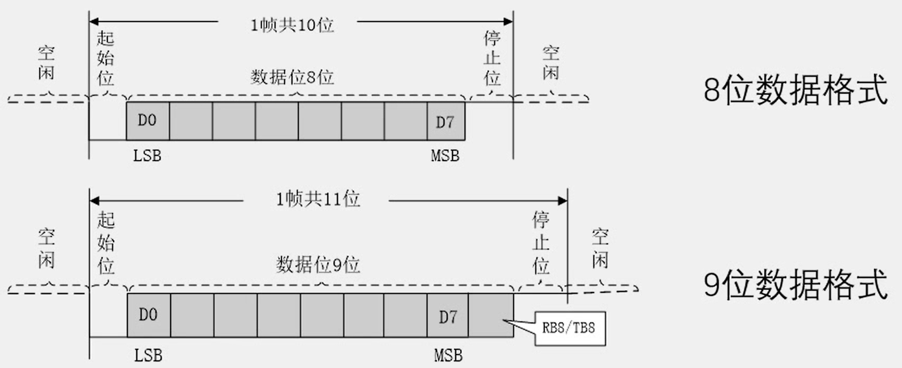
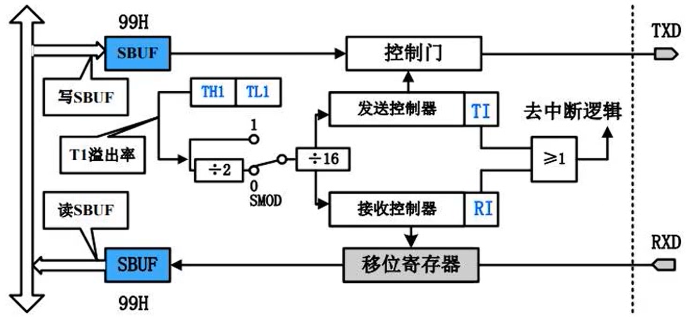
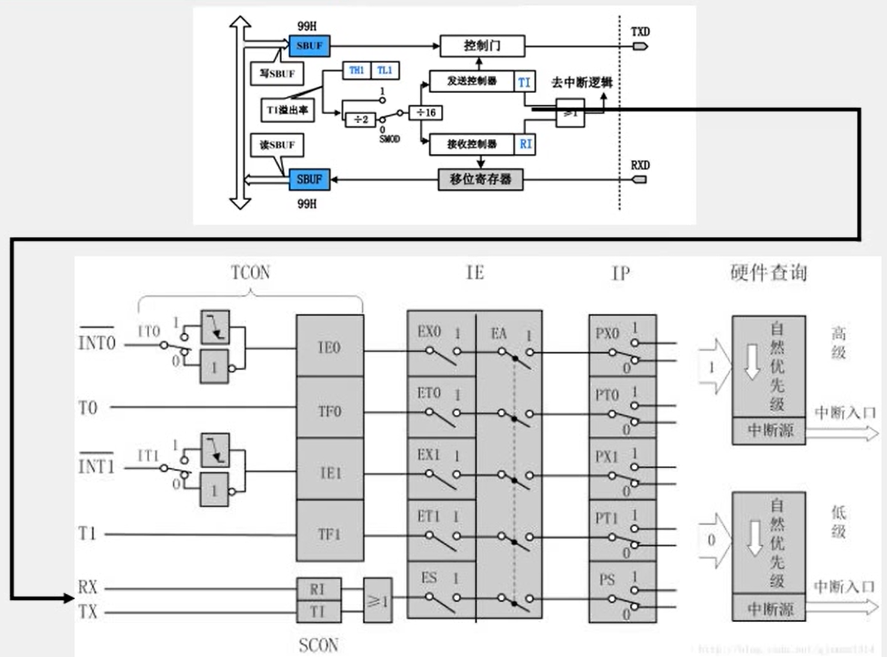

串口通信
串口介绍¶
串口是一种应用十分广泛的通讯接口。串口成本低、容易使用、通信线路简单，可实现两个设备的互相通信。
单片机的串口可以使单片机与单片机、单片机与电脑、单片机与各式各样的模块互相通信，极大的扩展了单片机的应用范围，增强了单片机系统的硬件实力。
51单片机内部自带UART（Universal Asynchronous Receiver Transmitter，通用异步收发器），可实现单片机的串口通信
硬件电路¶
graph TB
subgraph 设备1
VCC1(VCC)
TXD1(TXD)
RXD1(RXD)
GND1(GND)
end
subgraph 设备2
VCC2(VCC)
TXD2(TXD)
RXD2(RXD)
GND2(GND)
end
VCC1 --- VCC2
TXD1 --- RXD2
RXD1 --- TXD2
GND1 --- GND2简单的双向串口通信有两根通信线（发送端TXD和接收端RXD）
TXD与RXD要交叉连接
但只需单向的数据传输时，可以直接一根通信线
当电平标准不一致时，需要加电平转换芯片
电平标准¶
电平标准是数据1和数据0的表达方式，是传输线缆中认为规定的电压与数据的对应关系，串口常用的电平标准有：
- TTL电平：+5V表示1，0V表示0
- RS232电平：-3-15V表示1，+3+15表示0
- RS485电平：两线压差+2+6V表示1，-2-5表示0（差分信号）
常用通信接口¶
| 名称 | 引脚定义 | 通信方式 | 特点 |
|---|---|---|---|
| UART | TXD、RXD | 全双工、异步 | 点对点通信 |
| I2 C | SCL、SDA | 半双工、同步 | 可挂载多个设备 |
| SPI | SCLK、MOSI、MISO、CS | 全双工、同步 | 可挂载多个设备 |
| 1-Wire | DQ | 半双工、异步 | 可挂载多个设备 |
| CAN | |||
| USB |
- 全双工：通信双方可以在同一时刻互相传输数据
- 半双工：通信双方可以互相传输数据，但必须分时复用一根数据线
-
单工：通信只能有一方发送到另一方，不能反向传输
-
异步：通信双方各自约定通信速率
-
同步：通信双方靠一根时钟线来约定通信速率
-
总线：连接各个设备的数据传输线路（类似一条马路，把路边各住户连接起来，使住户可以相互交流）
51单片机的UART¶
STC89C52有1个UART
STC89C52的UART有四种工作模式：
- 模式0：同步移位寄存器
- 模式1：8位UART，波特率可变（常用）
- 模式2：9位UART，波特率固定
- 模式3：9位UART，波特率可变
根据原理图可知，RxD/P3.0、TxD/P3.1 共用两个口。
串口参数及时序图¶
- 波特率：串口通信的速率（发送和接受各数据位的间隔时间）——每秒钟信号变化的次数
- 比特率：单位时间内传输的比特（bit）数量——每秒钟传输的比特数
- 检验位：用于数据验证
- 停止位：用于数据帧间隔

先发低位后发高位
串口模式图¶

SBUF：串口数据缓存寄存器，物理上是两个独立的寄存器，但占用相同的地址。写操作时，写入的是发送寄存器；读操作时，读出的是接受寄存器。
串口与中断系统¶

串口相关寄存器¶
建议直接看《STC89C51RC系列单片机指南》的“第8章 串行口通信 8.1 串行口相关寄存器”。
Tips
MSB: Most Significant Bit
LSB: Last Significant Bit
SFR: Speical Function Register
Address: 98H
《串行》：
-
串行通信： 串行通信是一种数据传输方式，其中数据以位（bit）为单位，一个接一个地在发送器和接收器之间传输。与并行通信相比，串行通信使用更少的导线，因此成本较低，适用于长距离传输。常见的串行通信协议包括RS-232、RS-485、I2C、SPI和UART等。
-
串行处理： 在计算机科学中，串行处理指的是任务或指令一个接一个地执行，而不是同时执行。与并行处理相比，串行处理通常更简单，但处理速度较慢，因为它不能同时利用多个处理器或核心。
-
串行数据结构： 在数据结构中，串行数据结构如链表、队列等，其元素是按顺序排列的，每个元素都指向下一个元素（或前一个元素）。这种结构允许动态地添加或删除元素，但访问特定元素可能需要遍历整个结构。
-
串行编程： 串行编程是一种编程范式，其中程序的执行是顺序的，一个任务完成后才开始下一个任务。与并行编程相比，串行编程更容易理解和实现，但在多核处理器上可能无法充分利用硬件资源。
-
串行设备： 串行设备是指那些使用串行通信协议进行数据传输的设备，如串行端口打印机、串行鼠标等。
总的来说，“串行”通常意味着按顺序、一个接一个地进行操作或传输，这与并行（同时进行多个操作或传输）相对。
1. 串行口控制寄存器SCON和PCON¶
- 串行控制寄存器SCON
- 波特率选择特殊功能控制器PCON
Serial Control Register（可位寻址）¶
| SFR name | Address | B7 | B6 | B5 | B4 | B3 | B2 | B1 | B0 |
|---|---|---|---|---|---|---|---|---|---|
| SCON | 98H | SM0/FE | SM1 | SM2 | REN | TB8 | RB8 | TI | RI |
- SM0/FE：帧错误检测 OR 指定串行通信的工作方式
- SM0+SM1：串行口的工作方式（四种）
- SM2：方式2 / 3相关
- REN：允许或禁止串行接受控制位
- TB8：方式2 / 3相关
- RB8：方式2 / 3相关；方式1中，若SM2=0，则RB8是接收到的停止位；方式0不用TB8
- T1：发送中断请求中断标志位。除了方式0，其他方式中，在停止位开始发送时由内部硬件置位，必须由软件复位。
- R1：接收中断请求标志位。
中断请求&中断标志位
在微控制器和计算机系统中，发送中断请求（Interrupt Request，IRQ）和中断标志位（Interrupt Flag）是中断处理机制的关键组成部分。
中断允许外部或内部设备在需要时通知处理器，以便处理器可以暂停当前任务，转而处理更紧急的任务。
发送中断请求（Interrupt Request，IRQ）
-
中断源：中断可以由多种来源触发，包括外部设备（如键盘、鼠标、串口等）、内部事件（如定时器溢出、硬件故障等）。
-
中断请求信号：当中断源需要处理器的注意时，它会发送一个中断请求信号到处理器的中断请求引脚。这个信号告诉处理器有紧急任务需要处理。
-
中断屏蔽：处理器通常有一个中断屏蔽寄存器，用于控制哪些中断请求可以被处理器接受。如果某个中断被屏蔽，即使中断源发送了请求，处理器也不会响应。
-
中断服务例程（ISR）：一旦处理器接受中断请求，它会暂停当前任务，保存当前任务的状态，然后跳转到预定义的中断服务例程（ISR）来处理中断。ISR是一段专门用于处理特定中断的代码。
-
中断返回：中断服务例程执行完毕后，处理器会恢复被中断任务的状态，并继续执行被中断的任务。
中断标志位（Interrupt Flag）
-
中断标志位：在微控制器中，中断标志位通常是一个或多个寄存器中的特定位，用于指示特定中断事件的发生。例如，在8051微控制器中，TI（Timer 1 Interrupt）和RI（Receiver Interrupt）是两个常见的中断标志位。
-
设置和清除：当相应的中断事件发生时，中断标志位会被硬件自动设置（通常设置为1）。在ISR中，软件需要清除（通常清除为0）这些标志位，以避免重复进入ISR。
-
中断请求的触发：中断标志位的设置通常与中断请求信号的发送相关联。例如，当接收到新的串行数据时，RI标志位被设置，这可能会触发中断请求。
-
中断优先级：在多中断系统中，不同的中断可能有不同的优先级。中断控制器会根据优先级决定首先响应哪个中断请求。
串行通信的中断请求： 当一帧发送完成，内部硬件自动置位T1，即T1=1，请求中断处理；接收同理。
由于T1和R1以“或逻辑”关系向主机请求中断，所以需要在中断服务程序中查询T1和R1进行判别，然后分别处理。因此，两个中断请求标志位均不能由硬件自动置位，必须通过软件清0，否则将出现一次请求多次响应的错误。
为什么不能由硬件自动清除
在许多微控制器架构中，包括8051系列单片机，中断标志位如TI（发送中断）和RI（接收中断）不由硬件自动清除的原因通常与确保可靠性和灵活性有关。以下是几个关键原因：
-
确保中断被正确处理：
硬件自动清除中断标志位可能导致在中断服务程序（ISR）实际执行之前标志位就被清除，从而使CPU失去识别中断原因的依据。通过软件清除，可以确保在ISR中能够检测到这些标志位，并据此执行相应的处理逻辑。
-
避免中断丢失：
如果中断标志位由硬件自动清除，那么在ISR执行期间如果再次发生相同的中断事件，该中断可能会被丢失，因为标志位已经被清除。通过软件清除，可以确保即使在ISR执行期间发生新的中断事件，这些事件也能被正确记录和处理。
-
提供灵活性：
软件清除中断标志位提供了更大的灵活性。开发者可以根据实际需要在ISR中添加逻辑，以决定何时清除标志位。例如，可能需要在完成一系列操作后才清除标志位，以确保所有相关的处理都已完成。
-
防止重复响应：
如果中断标志位由硬件自动清除，那么在ISR执行期间如果再次发生中断，CPU可能会重复响应同一个中断请求，导致资源浪费和处理逻辑的混乱。通过软件清除，可以避免这种情况，确保每个中断请求只被响应一次。
-
错误处理：
在某些情况下，可能需要在ISR中进行错误处理或重试逻辑。如果中断标志位由硬件自动清除，那么在重试过程中可能会丢失中断请求。通过软件清除，可以在成功处理中断或决定放弃处理之前保持标志位的状态。
总之，不由硬件自动清除中断标志位是为了提供更大的控制能力和灵活性，确保中断能够被可靠和正确地处理。这也使得开发者能够根据具体应用需求设计更复杂的中断处理逻辑。
Power Control Register（不可位寻址）¶
| SFR name | Address | bit name | B7 | B6 | B5 | B4 | B3 | B2 | B1 | B0 |
|---|---|---|---|---|---|---|---|---|---|---|
| PCON | 87H | name | SMOD | SMODO | - | POF | GF1 | GF0 | PD | IDL |
- SMOD：波特率选择位。当用软件置位SMOD，即SMOD=1，则使串行通信方式1、2、3的波特率加倍；SMOD=0，则各工作方式的波特率加倍。复位时SMOD=0。
- SMOD0：帧错误检测有效控制位。
2. 串行口数据缓冲寄存器SBUF¶
—— Serial Data Buffer
地址：99H
实际是2个缓冲器：
- 只写寄存器：完成待发送数据的加载
- 只读寄存器：获得已接受到的数据
3. 从机地址控制寄存器SADEN和SADDR¶
从机
在通信系统中，从机（Slave）是指在主从架构中处于从属地位的设备。这种架构通常用于需要集中控制和简化网络拓扑的场景。以下是从机的详细讲解：
1. 主从架构
主从架构是一种常见的通信和控制系统结构，其中包含两种设备：
-
主机（Master）：负责控制和协调整个系统的运行。主机通常负责发起通信，发送命令，接收数据，并管理系统中的其他设备。
-
从机（Slave）：处于从属地位，接受主机的命令并执行相应的操作。从机通常不主动发起通信，而是响应主机的请求。
2. 从机的地址
在主从通信中，每个从机通常都有一个唯一的地址（Slave Address），用于标识和区分不同的从机。主机通过这个地址与特定的从机进行通信。从机地址可以是固定的，也可以是可配置的。
3. 从机的通信方式
从机通常通过以下方式与主机进行通信：
-
轮询（Polling）：主机定期查询每个从机的状态，从机在被查询时返回其状态信息。
-
中断驱动（Interrupt-Driven）：从机在有重要事件发生时主动向主机发送中断信号，主机接收到中断后处理相应的事件。
-
广播（Broadcast）：主机向所有从机发送命令，从机根据命令中的地址信息判断是否需要响应。
4. 从机的优点和缺点
优点：
-
简化网络拓扑：主从架构可以简化网络设计，减少布线复杂度。
-
集中控制：主机可以集中管理和控制所有从机，便于系统维护和升级。
-
可靠性高：主机负责错误检测和纠正，提高系统的可靠性。
缺点：
-
扩展性有限：增加从机数量可能增加主机的负担，影响系统性能。
-
故障传播：主机故障可能导致整个系统瘫痪，从机无法正常工作。
-
通信延迟：在轮询模式下，从机的响应可能存在延迟，影响实时性。
4. 与串行口中断相关的寄存器IE和IPH、IP¶
…………